ホーム → 文法 → DoJG main menu → 基本 → Basic Page 480
Conjunction
| A subordinate conjunction which marks a condition that brings about an uncontrollable event or state. | If; when |
| 【Related Expression: たら (ば, なら): 時】 |
(ks). ニューヨークに行くと面白い店が沢山ある・あります。
If you go to New York, there are many interesting shops.
| {V/Adjective (い/な) Noun+copula} informal nonpast | と | |
| 話すと | If someone talks | |
| 高いと | If something is expensive | |
| 静かだと | If something is quiet | |
| 先生だと | If someone is a teacher |
(a). それは先生に聞くとすぐ分かった。
I understood it immediately when I asked my teacher.
(b). タイヤは古いと危ないですよ。
Tires are dangerous if they are old.
(c). 魚が嫌いだと日本へ行った時困りますか？
If you don't like fish, will you have trouble when you go to Japan?
(d). 学生だと割引があります。
If you are a student, there is a discount.
1. In Sentence1とSentence2, Sentence1 must be nonpast even if it expresses a past event or action, as in Example (a). Tense in expressed in Sentence2.
2. In Sentence1とSentence2, Sentence2 cannot be a command, a request, a suggestion, an invitation or a volitional sentence. The following sentences are all ungrammatical.
(1)
| ⎧a. | 来なさい。 | |
| ⎪b. | 来てください。 | |
| ⎪c. | 来たらどうですか。 | |
| ⎩d. | 来ませんか。 |
| ⎧a. | come to my place. | |
| ⎪b. | please come to my place. | |
| ⎪c. | why don't you come to my place? | |
| ⎩d. | wouldn't you like to come to my place? |
(For the correct structures, see たら, Note 4.)
★Semantic Derivations of と
